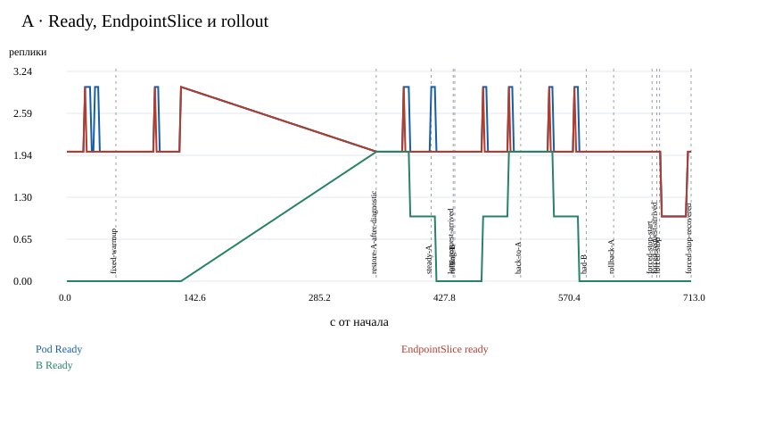
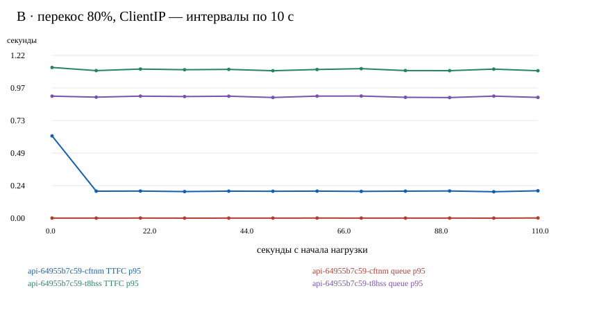
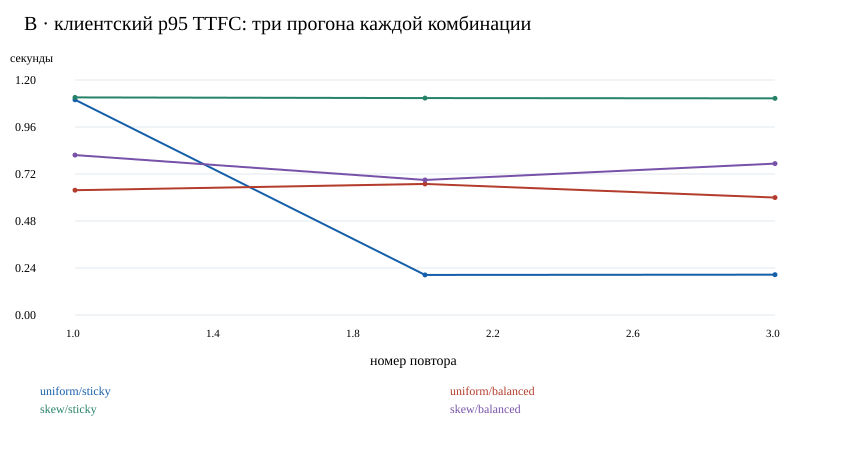
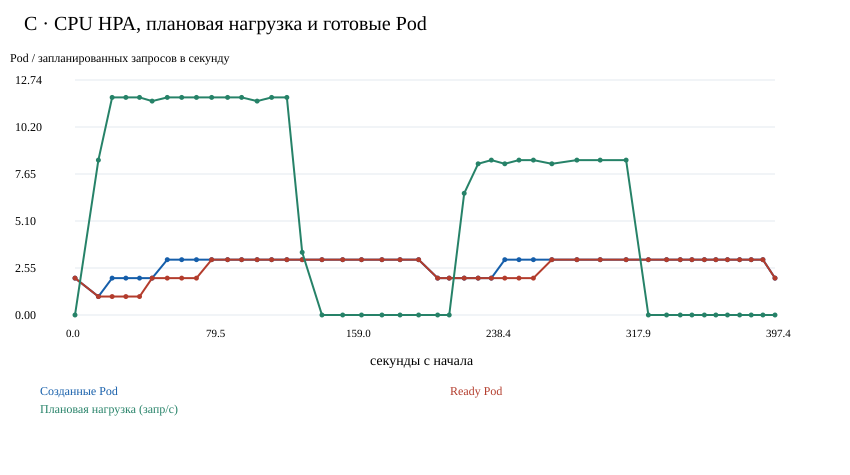

ДЗ 11. Kubernetes под нагрузкой
Основные опыты подтверждены сохранёнными данными
Стенд и инфраструктура
Продолжение API из ДЗ 8–10. В образе только FastAPI/Uvicorn и CPU-имитатор, без весов, обучения и MLflow. Режим backend_mode=simulated. Два Pod, CPU request 100m / limit 500m, память 64/160 MiB. На Pod: 2 active, 4 waiting, LRU на 4 префикса; искусственная цена hit/miss 0,06/0,36 с, интервал частей 0,13 с.
Исходное состояние: Docker 28.3.2, около 9.15 GiB свободно, лимит Docker 3.75 GiB. kind действительно создал Ready control-plane. При импорте Grafana свободное место упало до 294 MiB; containerd вернул I/O error, BuildKit — EOF. Это блокировка первого запуска, не оценка размера стенда. Фактическое использование после успешного развёртывания собирает hw11.collect.
Повторный запуск: 24.97 GiB свободно до развёртывания. На WSL2 отсутствовала поддержка iptables recent: сначала прямой Pod отвечал, оба Service — нет. Неудачные попытки и ошибка kube-proxy сохранены в diagnostics/iptables. Решение — отдельный IPv4 kind с прокси nftables, не изменение маршрутизации в самом API. Подтверждённых успешных smoke через Service: 2 / 2.
Размер внутри узла по du: 2.4G /var/lib/containerd
53M /var/lib/kubelet
. Это данные о занятом месте внутри контейнера kind, не оценка роста всей VHDX. Лимиты томов/время хранения заданы в чарте.
ConfigMap A/B неизменяемы; процесс сверяет SHA-256 содержимого и версию, а отвечает по фактически загруженной версии. Все ответы, включая фрагменты, содержат request ID, Pod и версию. request/session ID в логах, а не в метках Prometheus. Команды запуска и удаления — README-HW11.
A · Прогрев, rolling update, откат
Гипотеза: проверка живого HTTP вместо прогретого backend преждевременно добавляет Pod в EndpointSlice. make hw11-a меняет только режим проб под одинаковой нагрузкой. Исправление: порог startup покрывает 20 с, readiness проверяет прогрев, liveness — процесс. Для rollout 1 surge / 0 unavailable, preStop 4 с, Uvicorn 35 с, grace 45 с; отдельный опыт форсированной остановки не обязан быть без потерь.
| Результат A | Значение |
|---|---|
| broken_early | 20 |
| fixed_early | 0 |
| broken_planned | 61 |
| fixed_planned | 61 |
| rollout_completed | 105 |
| rollout_5xx | 0 |
| rollout_incomplete | 0 |
| rollback_versions | ['A', 'A', 'A', 'A'] |
| failed_B_ready | False |
| bad_B_service_versions | ['A'] |
| forced_outcome | aborted |
| forced_chunks | 4 |
| recovery_attempts | 6 |
| recovery_seconds | 35.159 |
Контрольный поток: 30 частей за 27.51 с, версия A. Запрос начался до выката и закончился после его начала. Все попытки · Ready и EndpointSlice.

B · Привязка и горячая реплика
Гипотеза: ClientIP объединяет запросы одного клиента в одном Pod, даже если в другом есть место. make hw11-b: 4 клиента, 800 запланированных запросов за 120 с на прогон; четыре комбинации по три раза. Одинаковый payload и расписание для сравниваемых вариантов, отдельное TCP-соединение на запрос. Изначально префиксы каждого прогона холодные. Исправление для сравнения — убрать ClientIP, иначе сохранить локальность только как предпочтение. Если перекоса нет, проверяем IP и фактическую раскладку четырёх клиентов, а не удаляем неудобный прогон.
| Прогон | План | Отпр. | 200+done | 4xx | Оборв. | Тайм-аут | Др. ошибки | Неуспех, % | TTFC p50 | TTFC p95 | Full p50 | Full p95 | Отстав. p95, с | Распред. |
|---|---|---|---|---|---|---|---|---|---|---|---|---|---|---|
| b-uniform-sticky-1 | 800 | 800 | 724 | 76 | 0 | 0 | 0 | 9.500 | 0.948 | 1.100 | 1.211 | 1.363 | 0.001 | t8hss=600, cftnm=200 |
| b-uniform-balanced-1 | 800 | 800 | 799 | 1 | 0 | 0 | 0 | 0.125 | 0.214 | 0.638 | 0.478 | 0.903 | 0.002 | cftnm=389, t8hss=411 |
| b-skew-sticky-1 | 800 | 800 | 577 | 223 | 0 | 0 | 0 | 27.875 | 1.025 | 1.112 | 1.289 | 1.375 | 0.002 | t8hss=747, cftnm=53 |
| b-skew-balanced-1 | 800 | 800 | 799 | 1 | 0 | 0 | 0 | 0.125 | 0.221 | 0.817 | 0.485 | 1.080 | 0.001 | t8hss=368, cftnm=432 |
| b-uniform-balanced-2 | 800 | 800 | 800 | 0 | 0 | 0 | 0 | 0.000 | 0.214 | 0.669 | 0.478 | 0.932 | 0.001 | t8hss=384, cftnm=416 |
| b-uniform-sticky-2 | 800 | 800 | 800 | 0 | 0 | 0 | 0 | 0.000 | 0.199 | 0.205 | 0.462 | 0.469 | 0.001 | t8hss=400, cftnm=400 |
| b-skew-balanced-2 | 800 | 800 | 800 | 0 | 0 | 0 | 0 | 0.000 | 0.217 | 0.690 | 0.480 | 0.953 | 0.001 | cftnm=408, t8hss=392 |
| b-skew-sticky-2 | 800 | 800 | 630 | 170 | 0 | 0 | 0 | 21.250 | 0.989 | 1.108 | 1.254 | 1.371 | 0.002 | t8hss=694, cftnm=106 |
| b-uniform-sticky-3 | 800 | 800 | 800 | 0 | 0 | 0 | 0 | 0.000 | 0.199 | 0.206 | 0.462 | 0.470 | 0.001 | t8hss=400, cftnm=400 |
| b-uniform-balanced-3 | 800 | 800 | 800 | 0 | 0 | 0 | 0 | 0.000 | 0.214 | 0.600 | 0.478 | 0.863 | 0.002 | t8hss=399, cftnm=401 |
| b-skew-sticky-3 | 800 | 800 | 630 | 170 | 0 | 0 | 0 | 21.250 | 0.988 | 1.107 | 1.252 | 1.371 | 0.002 | t8hss=694, cftnm=106 |
| b-skew-balanced-3 | 800 | 800 | 799 | 1 | 0 | 0 | 0 | 0.125 | 0.224 | 0.773 | 0.487 | 1.036 | 0.002 | t8hss=415, cftnm=385 |
| Политика / профиль | Повторы | Медиана p95 TTFC, с | Медиана p95 очереди, с | Доля неуспеха | Доля самого горячего Pod | Доля hit | Сэмплы: ожидание при свободных слотах |
|---|---|---|---|---|---|---|---|
| uniform/sticky | 3 | 0.206 | 0.001 | 0.000 | 0.500 | 0.993 | 0 |
| uniform/balanced | 3 | 0.638 | 0.411 | 0.000 | 0.514 | 0.993 | 0 |
| skew/sticky | 3 | 1.108 | 0.906 | 0.212 | 0.868 | 0.992 | 64 |
| skew/balanced | 3 | 0.773 | 0.569 | 0.001 | 0.519 | 0.992 | 11 |
Для перекоса 80% выбираем Service без ClientIP. Медиана p95 TTFC 1.108 → 0.773 с; медианная доля неуспеха 21.2% → 0.1%. Доля cache hit 99.2% → 99.2%. Это результат коротких префиксов, помещающихся в оба LRU, а не обещание для GPU-сервиса.


Свободная ёмкость в таблице — одновременно waiting > 0 у самого загруженного Pod и running < 2 у другого на одном 5-секундном сэмпле. Нулевой результат у отдельного повтора сохранён: это не доказательство отсутствия кратких всплесков между сэмплами. Сохраняем ClientIP только при проверенной выгоде локальности и контроле очереди.
C · HPA и алерты
make hw11-c: resource metrics API, CPU HPA 2–3 по 65% requests, scale-down stabilization 45 с. Под нагрузкой работает CPU-цикл, а не только sleep. Среднее может скрыть горячий Pod, а новая реплика не перебивает существующую ClientIP-привязку. В правилах HighTTFC: p95 > 0,8 с при ≥8 успешных за 30 с; HighRejectionRate: >12% при ≥15 исходах; удержание 15 с. Отдельно нужны наблюдения pending, firing и возврата в норму.
| Алерт | Состояние | Фаза | UTC epoch |
|---|---|---|---|
| HighRejectionRate | pending | balanced_cpu | 1794775986.920 |
| HighTTFC | pending | balanced_cpu | 1794775994.725 |
| HighRejectionRate | firing | balanced_cpu | 1794776002.479 |
| HighTTFC | firing | balanced_cpu | 1794776009.628 |
| Фаза | Новый Pod | Создан, с | Ready, с | Возврат через с после последнего планового | Запросы по Pod |
|---|---|---|---|---|---|
| balanced_cpu | api-64955b7c59-r276k | 1.648 | 32.276 | 79.448 | {'api-64955b7c59-p692b': 776, 'api-64955b7c59-r276k': 387, 'api-64955b7c59-cbddl': 190} |
| balanced_cpu | api-64955b7c59-cbddl | 31.648 | 66.071 | 79.448 | {'api-64955b7c59-p692b': 776, 'api-64955b7c59-r276k': 387, 'api-64955b7c59-cbddl': 190} |
| sticky_cpu | api-64955b7c59-jq29b | 18.008 | 49.558 | 81.323 | {'api-64955b7c59-p692b': 688, 'api-64955b7c59-r276k': 104} |
| Фаза | Алерт | Из | В | Секунды от начала нагрузки |
|---|---|---|---|---|
| balanced_cpu | HighRejectionRate | inactive | pending | 9.568 |
| balanced_cpu | HighTTFC | inactive | pending | 17.373 |
| balanced_cpu | HighRejectionRate | pending | firing | 25.127 |
| balanced_cpu | HighTTFC | pending | firing | 32.276 |
| balanced_cpu | HighRejectionRate | firing | inactive | 151.135 |
| balanced_cpu | HighTTFC | firing | inactive | 151.135 |
| sticky_cpu | HighRejectionRate | inactive | pending | 7.715 |
| sticky_cpu | HighTTFC | inactive | pending | 15.207 |
| sticky_cpu | HighRejectionRate | pending | firing | 22.846 |
| sticky_cpu | HighTTFC | pending | firing | 30.893 |
| sticky_cpu | HighRejectionRate | firing | inactive | 129.075 |
| sticky_cpu | HighTTFC | firing | inactive | 129.075 |
При ClientIP третий Pod создан через 18.0 с и впервые наблюдался Ready через 49.6 с от начала нагрузки. От четырёх уже привязанных IP он получил 0 запросов. Порог считает среднее CPU по репликам, тогда как ClientIP продолжает направлять запросы по старым привязкам.
При первом включении HPA Helm удалил поле replicas и Deployment кратко упал до 1. Этот участок сохранён, а чистый цикл 2→3→2 виден на фазе ClientIP. Чарт теперь при включении HPA сохраняет живое значение replicas и ждёт две Ready-реплики с CPU-метриками перед опытом. Отдельно повторно проверили само включение без нагрузки: минимум 2, имена Pod не изменились. Трасса контрольной проверки.

Перцентили и данные
TTFC — монотонный интервал send→первый содержательный chunk, full — send→done; inter-chunk измеряется только между частями. Отсутствующий done — незавершённый поток даже при HTTP 200. Никаких TTFT, TPOT или tokens/s для имитатора. Клиентский p50/p95 интерполируется на отсортированных успешных запросах, численность и ошибки указываются отдельно. PromQL сохраняет le при агрегации по Pod, использует дельту накопленных bucket в известном окне и сравнивает n, а не предполагает одинаковый выбор. Гистограмма приближает перцентиль внутри bucket; клиент включает сеть.
| Прогон | Мера | Клиент n | Prom n | Клиент p95, с | Prom p95, с |
|---|---|---|---|---|---|
| b-uniform-sticky-1 | ttfc | 724 | 724.000 | 1.100 | 1.423 |
| b-uniform-sticky-1 | full | 724 | 724.000 | 1.363 | 1.465 |
| b-uniform-balanced-1 | ttfc | 799 | 799.000 | 0.638 | 0.696 |
| b-uniform-balanced-1 | full | 799 | 799.000 | 0.903 | 0.950 |
| b-skew-sticky-1 | ttfc | 577 | 577.000 | 1.112 | 1.459 |
| b-skew-sticky-1 | full | 577 | 577.000 | 1.375 | 1.472 |
| b-skew-balanced-1 | ttfc | 799 | 799.000 | 0.817 | 0.814 |
| b-skew-balanced-1 | full | 799 | 799.000 | 1.080 | 1.123 |
| b-uniform-balanced-2 | ttfc | 800 | 800.000 | 0.669 | 0.692 |
| b-uniform-balanced-2 | full | 800 | 800.000 | 0.932 | 0.944 |
| b-uniform-sticky-2 | ttfc | 800 | 800.000 | 0.205 | 0.197 |
| b-uniform-sticky-2 | full | 800 | 800.000 | 0.469 | 0.495 |
| b-skew-balanced-2 | ttfc | 800 | 800.000 | 0.690 | 0.707 |
| b-skew-balanced-2 | full | 800 | 800.000 | 0.953 | 0.958 |
| b-skew-sticky-2 | ttfc | 630 | 630.000 | 1.108 | 1.443 |
| b-skew-sticky-2 | full | 630 | 630.000 | 1.371 | 1.470 |
| b-uniform-sticky-3 | ttfc | 800 | 800.000 | 0.206 | 0.198 |
| b-uniform-sticky-3 | full | 800 | 800.000 | 0.470 | 0.495 |
| b-uniform-balanced-3 | ttfc | 800 | 800.000 | 0.600 | 0.681 |
| b-uniform-balanced-3 | full | 800 | 800.000 | 0.863 | 0.935 |
| b-skew-sticky-3 | ttfc | 630 | 630.000 | 1.107 | 1.442 |
| b-skew-sticky-3 | full | 630 | 630.000 | 1.371 | 1.469 |
| b-skew-balanced-3 | ttfc | 799 | 799.000 | 0.773 | 0.809 |
| b-skew-balanced-3 | full | 799 | 799.000 | 1.036 | 1.108 |
Проверки и ревью PR
Локальные тесты HTTP-учёта и FastAPI — предварительная проверка, не замена живым Kubernetes-проверкам. Результаты make hw11-verify: 5/5 записано. Сценарии: прогрев/EndpointSlice, фактическая версия после отката, та же версия и полный диалог на заменившем Pod, изоляция сессий, отдельный учёт 4xx и оборванных ответов.
Постоянную привязку не принимаю. При равных прочих затратах выбираю свободный B: ожидание префикса в A 3 с, пересчёт в B 0,8 с, ориентир выигрыша 2,2 с до одинакового decode. Это предварительный выбор: нужны возраст и ошибка оценки очереди, длина префикса, измеренная цена cache miss, остаток текущих генераций, запас KV-памяти, p95 и бюджет запроса. Допускаю запрос только в Ready-реплику с той же моделью и в ограниченную очередь; при превышении бюджета возвращаю 429 с ограниченным повтором клиента. Историю передаю с запросом либо храню за Pod; потеря A требует пересчёта, не потери диалога. Уже открытый поток не мигрирует: даём завершиться при drain, при аварии явно отмечаем обрыв; повтор отдельной попыткой с тем же прикладным идентификатором, не склеиваем частичные ответы.
Первичный кейс: Google Cloud / Vertex AI: GKE Inference Gateway. В этом кейсе команда повышала приоритет очереди относительно кеша, чтобы обходить горячие узлы. Это подтверждает идею совместного учёта очереди и локальности, но не переносит их ускорение на наш имитатор. Файл лекции 11 не предоставлен; принадлежность кейса к ней не подтверждена.